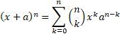

<script type="text/javascript"
src="http://cdn.mathjax.org/mathjax/latest/MathJax.js?config=TeX-AMS-MML_HTMLorMML">
</script>

<p><a href="another.html" style="color: blue;">Hi, when do changes occur???? </a></p>
<p>&nbsp;</p>
<p></p>
<p></p>
<mml:math xmlns:mml="http://www.w3.org/1998/Math/MathML" xmlns:m="http://schemas.openxmlformats.org/officeDocument/2006/math"><mml:msup><mml:mrow><mml:mfenced separators="|"><mml:mrow><mml:mi>x</mml:mi><mml:mo>+</mml:mo><mml:mi>a</mml:mi></mml:mrow></mml:mfenced></mml:mrow><mml:mrow><mml:mi>n</mml:mi></mml:mrow></mml:msup><mml:mo>=</mml:mo></mml:math>eferencew:lsdExceptionਂᰀ眀㨀氀猀搀䔀砀挀攀瀀琀椀漀渀Ȁ⠡愀渀渀漀琀愀琀